Serval WS (Parts & Repairs)
Many components in your Serval WS can be upgraded or replaced as necessary. Follow these step-by-step guides for instructions:
- Removing the battery
- Removing the bottom cover
- Replacing the keyboard
- Replacing the RAM
- Replacing an M.2/NVMe SSD
- Replacing the fans/heatsink/thermal paste
- Replacing the CPU
- Replacing the CMOS battery
- Replacing the WiFi/Bluetooth module
Removing the battery:
The battery provides primary power whenever the system is unplugged.
The model number for the Serval 12's battery is PB50BAT-6, and the original part number is 6-87-PB50S-61D02. Third-party battery sellers may list one or both of these numbers, and may offer other compatible part numbers with the same model number. You can also contact System76 to purchase a replacement battery.
Tools required: Cross-head (Phillips) screwdriver
Time estimate: 1 minute
Difficulty: Easy ●
Steps to remove the battery:
- Place the machine lid-side down.
- Use a soft surface (such as a towel) to avoid scratches.
- Unscrew the two battery screws (highlighted yellow below.)

- Pick the battery up and remove it from the slot.
Removing the bottom cover:
Removing the cover is required to access the internal components. Prior to removing the cover, ensure the AC power is unplugged and all peripherals (including SD cards and USB drives) are unplugged or removed from the system.
Tools required: Cross-head (Phillips) screwdriver
Time estimate: 5 minutes
Difficulty: Easy ●
Steps to remove the bottom cover:
- Remove the battery.
- Remove the 5 bottom panel screws (highlighted red below.)
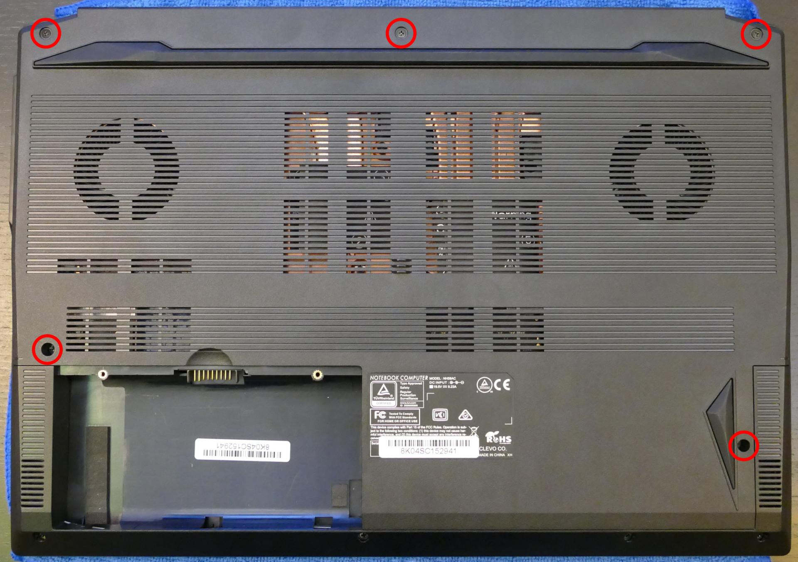
- Slide the bottom panel away from the battery slot, then lift it off of the case.
Replacing the keyboard:
The keyboard can be replaced using the instructions below.
Tools required: Cross-head (Phillips) screwdriver
Time estimate: 10 minutes
Difficulty: Medium ●
Steps to replace the keyboard:
- Follow the steps above to remove the battery and remove the bottom cover.
- Remove the two keyboard screws (circled green and cyan below.)

- Open the lid slightly and place the machine on its side.
- Push the screwdriver into the keyboard push point (highlighted cyan above) until the keyboard pops out.

- Flip the keyboard over onto the touchpad and set the Serval WS back down. The larger ribbon cable is for the keyboard, while the smaller ribbon cable is for the keyboard backlight.
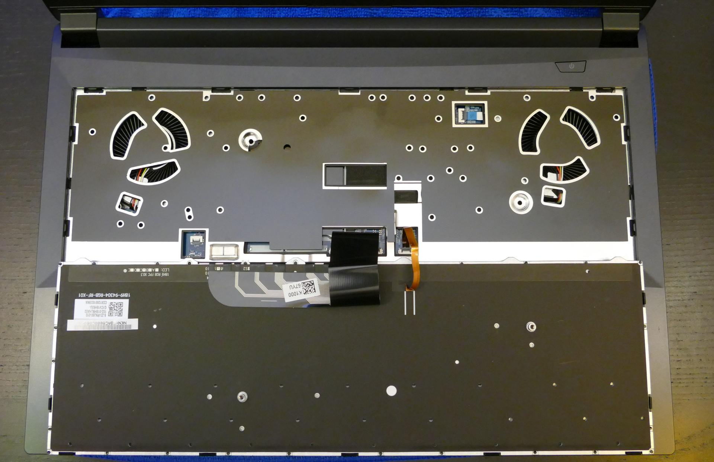
- Flip the black latches (highlighted red below) upwards to free the ribbon cables.
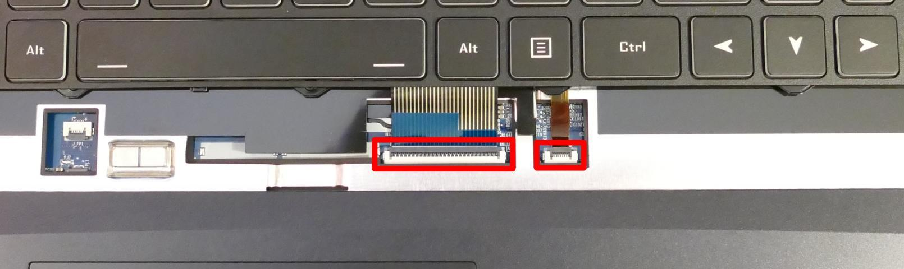
- Pull the ribbon cables out of the connectors.
- Remove the keyboard and replace it with the new one.
- Carefully slide both ribbon cables into their connectors.
- Flip the black latches back into place to secure the ribbon cables.
- Place the keyboard back into position, starting with the tabs on the bottom edge.
- Secure the rest of the keyboard by pressing down on each of its edges.
- Turn the machine lid-side down again.
- Replace the 2 keyboard screws, the bottom panel, and the battery.
- Boot the machine and confirm the keyboard and keyboard backlight are operational.
Replacing the RAM:
The Serval WS 12 supports up to 64GB (2x32GB) of DDR4 SO-DIMMs running at 3200MHz. If you've purchased new RAM, need to replace your RAM, or are reseating your RAM, follow these steps.
Tools required: Cross-head (Phillips) screwdriver
Time estimate: 10 minutes
Difficulty: Easy ●
Steps to replace the RAM:
- Follow the steps above to remove the battery and remove the bottom cover.
- Press the small tabs on both sides of the RAM simultaneously. The RAM should spring up to an angle.
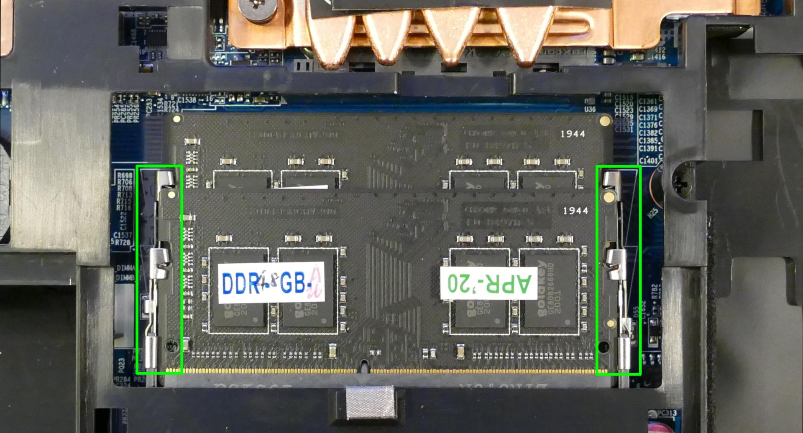
- Remove the RAM from the slot.
- Insert the new RAM (or reseat the existing RAM) by placing it in the keyed slot and pressing down on the RAM until it clicks into place.
Replacing an M.2/NVMe SSD:
This model supports up to two M.2 SSDs. Both M.2 slots are size 2280. Slot 1 supports PCIe NVMe Generation 2, while Slot 2 supports either SATA III or PCIe NVMe Generation 3.
Tools required: Cross-head (Phillips) screwdriver
Time estimate: 10 minutes
Difficulty: Easy ●
Steps to replace the M.2 drive:
- Follow the steps above to remove the battery and remove the bottom cover.
- Unscrew the retainer screw opposite the M.2 slot.

- Remove the existing M.2 drive by pulling it out of the slot.
- Insert the new M.2 drive into the slot and hold it in place.
- The slot closest to the fan supports either PCIe NVMe Generation 3 or SATA III. The slot closest to the battery supports PCIe NVMe Generation 2 only. (PCIe NVMe Generation 3 drives will work at slower speeds in the Generation 2 slot.)
- Replace the retainer screw.
Replacing the cooling system:
The Serval WS 12 has a single heatsink for the CPU and GPU. One fan is attached to the heatsink, while one additional fan is separate from the heatsink.
If the fans become noisy and cleaning them out doesn't fix the issue, you may need a new fan. Contact Support to start a warranty claim or parts purchase.
Depending on your climate and the age of the machine, it may be necessary to apply new thermal paste between the CPU/GPU and the heatsink. Thermal paste helps facilitate effective heat transfer between the CPU/GPU and the cooling equipment. These instructions can also be used in the unlikely event your heatsink needs replacing.
Tools required: Cross-head (Phillips) screwdriver
Time estimate: 15 minutes
Difficulty: High ●
Steps to replace the heatsink/thermal paste:
- Follow the steps above to remove the battery and remove the bottom cover.
- Locate the CPU heatsink screws.
- Remove the eight numbered screws in reverse order, starting with #8, then #7, and continuing until you have removed #1. Screws 1-6 (highlighted red below) are on the heat sink, while 7-8 (highlighted green below) are on the attached fan.

- Unplug the white fan connector (for the attached fan) from the motherboard.
- Remove the heatsink/fans from the case, being careful not to bend the heatsink pipes. It may take some pressure to break the seal of the thermal paste. If necessary, apply pressure using a flat object wedged underneath the ends of the heatsink pipes.
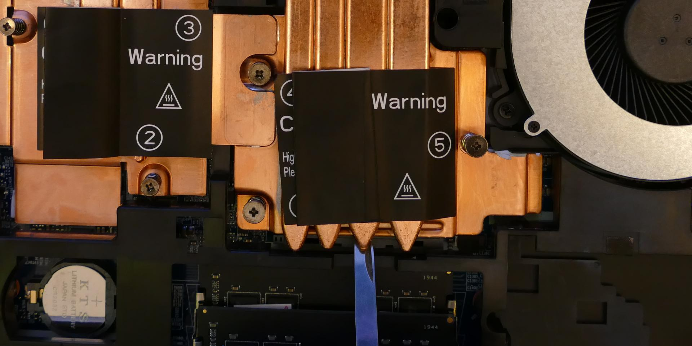
- Using a paper towel, remove the existing thermal paste. You may also use a small amount of rubbing alcohol if the old paste is dried or difficult to remove.
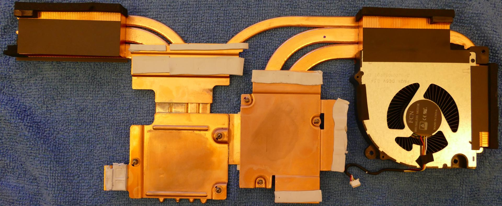
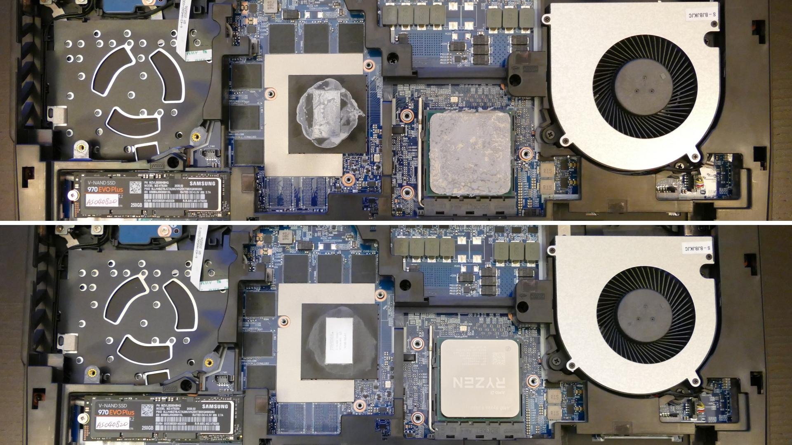
- After cleaning the CPU, GPU, and heatsink, apply a small line of thermal paste directly onto the CPU and GPU chips.
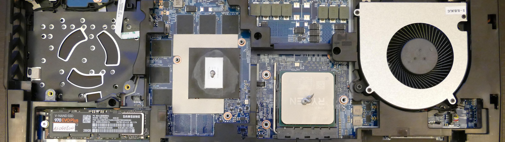
- Carefully replace the heatsink.
- Replace the heatsink and fan screws, starting with #1, then #2, and so on until #8.
- Plug the white fan connector (for the attached fan) back into the motherboard.
Steps to replace the additional fan:
- Follow the steps above to remove the heatsink.
- Remove the three screws (highlighted yellow in the above section) holding the additional fan in place.
- Unplug the black connector from the motherboard (pictured below) and remove the additional fan.

Replacing the CPU:
The Serval WS uses an AM4 socket for the CPU. If you are upgrading or replacing your CPU, follow the steps below.
Tools required: Cross-head (Phillips) screwdriver
Time estimate: 20 minutes
Difficulty: High ●
Steps to replace the CPU:
- Follow the steps above to remove the battery, remove the bottom cover, and remove the heatsink.
- Lift up the lever holding the CPU in place, highlighted red below.
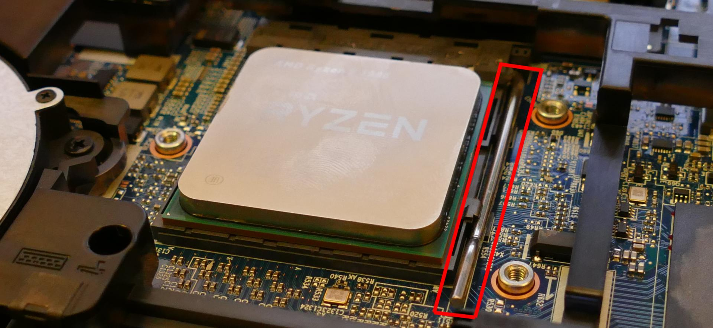

- Carefully lift the old CPU out of the socket. Caution: Be careful not to bend any of the gold pins on the bottom of the CPU.
- Carefully place the new CPU into the socket. One of the corners of the socket and CPU are marked with a triangle; be sure to match the triangles to the same corner so the CPU is placed in the correct orientation.
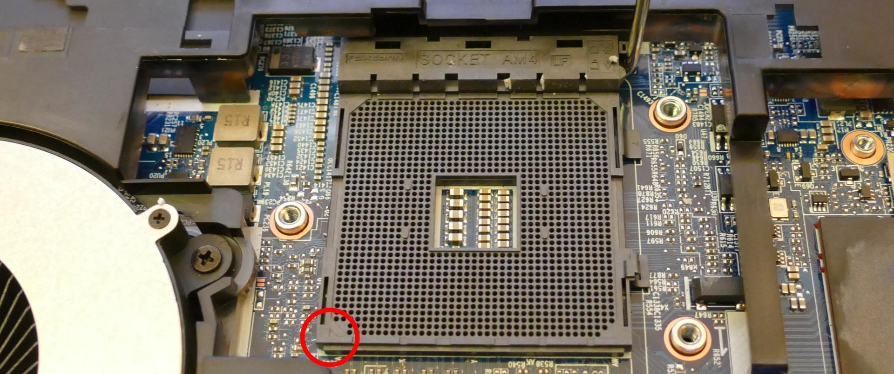
- Replace the thermal paste, heatsink/fan(s), bottom panel, and battery.
Replacing the CMOS battery:
The CMOS battery supplies power to the system's CMOS chip. UEFI settings and the comptuer's hardware clock are stored on the CMOS. If your system doesn't boot, you can reset the CMOS to force a low-level hardware reset. If your clock is constantly resetting, it's likely your CMOS battery needs to be replaced.
Warning (ingestion hazard): Keep batteries out of reach of children. Death or serious injury can occur if ingested. If a battery is suspected to be swallowed or inserted inside any part of the body, seek immediate medical attention. In the US, you can also call the National Battery Ingestion Hotline for guidance: 1 (800) 498-8666
Tools required: Cross-head (Phillips) screwdriver
Time estimate: 10 minutes
Difficulty: Easy ●
Steps to replace the CMOS battery:
- Follow the steps above to remove the main battery and remove the bottom cover.
- Locate the CMOS battery, which is in between the M.2 SSD slots and the RAM slots, just next to the battery slot.
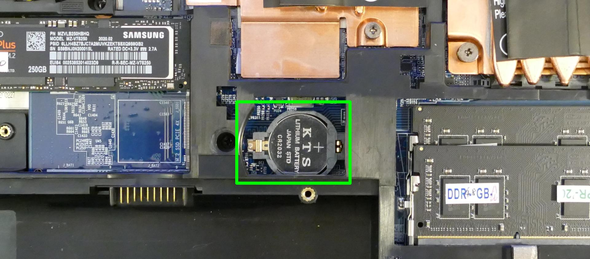
- From the side of the battery that is not covered, pull the battery up to free it from the slot, then remove it.
- To clear the CMOS, open the lid of the machine and hold down the power button for at least 15 seconds to discharge any residual energy in the system.
- Place the new (or existing) CMOS battery in the black plastic slot, starting with the side that will cover the battery, then push the opposite side back into place.

- Replace the bottom panel and main battery.
- Power up the Serval WS. The system may power itself off and on after initial boot; this is normal behavior when the CMOS has been reset.
Replacing the wireless card:
Your Serval WS's WiFi and Bluetooth are both handled by the same module. It is a standard M.2 2230 slot with PCIe and USB interfaces (E-key).
Tools required: Cross-head (Phillips) screwdriver
Time estimate: 10 minutes
Difficulty: Medium ●
Steps to replace the WiFi/Bluetooth module:
- Follow the steps above to remove the battery and remove the bottom cover.
- If there is an M.2 SSD in the slot closest to the fan/heatsink, follow the steps above to remove the M.2 SSD.
- Locate the wireless module. Remove any clear tape that is securing the wires.

- Gently remove the two antennas (highlighted red above) by pulling them up and away from the wireless card.
- Remove the retaining screw opposite the M.2 slot, highlighted yellow above.
- The wireless card will pop up at an angle. Remove the card from the M.2 slot.
- Insert the new wireless card into the M.2 slot at an angle.
- Replace the retaining screw.
- Attach the two antennas by aligning the circular fittings and pressing onto the wireless card. The connectors will snap into place. Use caution when attaching the connectors; the pins can bend, break, or snap.
- Replace the M.2 SSD, bottom cover, and battery.